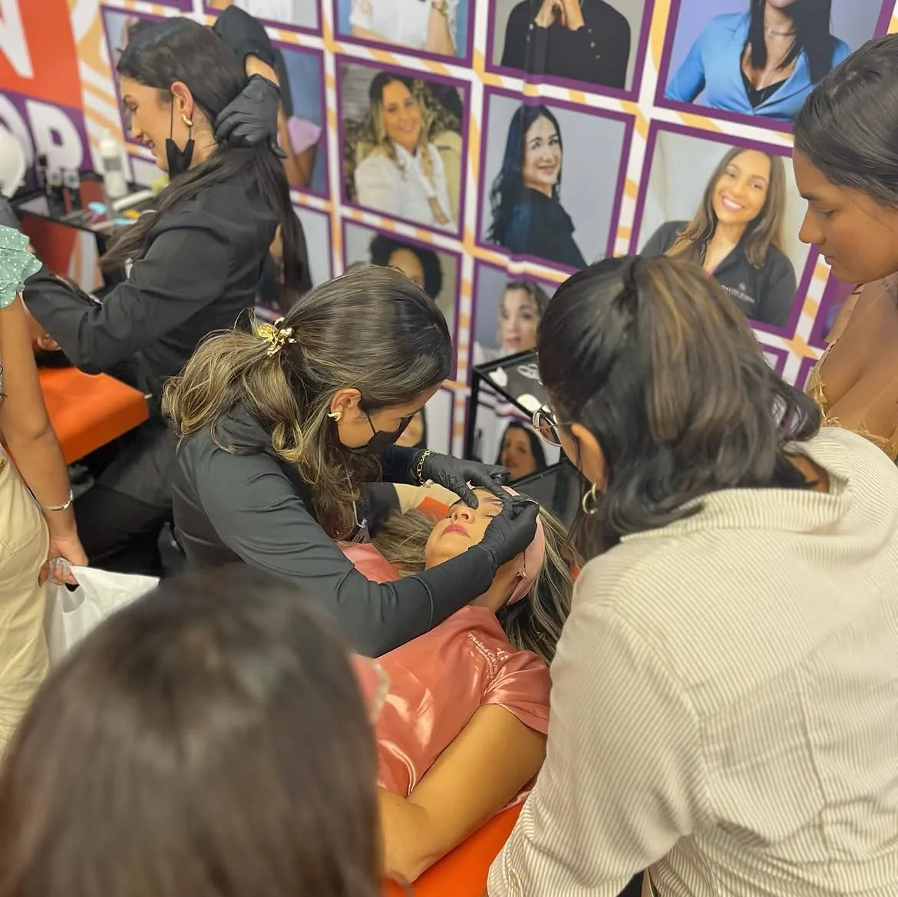

thaina.cavalcanti cursos
Demonstração ao vivo
 Apostila + certificado
Apostila + certificado“Eu sei, porque já estive do outro lado.”
ThaináCada opção parte de um objeto do universo de quem quer fazer o curso, com fontes, cores e movimento próprios. A paleta da marca continua (rosa, creme e oliva), mas a parte dos cursos ganha uma identidade de “outro site”. A faixa cinza em cima de cada opção é o fim da parte do studio, só para mostrar a virada. Tudo é de verdade e clicável: o botão de vaga abre o WhatsApp.
Curso presencial de design de sobrancelhas em Carpina-PE, em turma pequena, com prática em modelo real e correção de perto até você atender sozinha.
Certificado
de conclusão
Certificamos que
o seu nome
concluiu o Curso de Design de Sobrancelhas, com técnica, prática em modelo real e correção de perto, dentro do Studio Thainá Cavalcanti.
Curso presencial de design de sobrancelhas em Carpina-PE, em turma pequena. Você entende o porquê de cada traço e pratica em modelo real, com a Thainá ao seu lado.

Apostila + certificado“Eu sei, porque já estive do outro lado.”
ThaináCurso presencial em Carpina-PE, em turma pequena. Você sai do “será que eu consigo?” para o primeiro atendimento, com a Thainá ao seu lado.
Curso presencial de design de sobrancelhas em Carpina-PE. Turma pequena, prática em modelo real e correção de perto, para você começar a atender com segurança.
Quero minha vagaSeu nome
Designer de sobrancelhasCarpina-PE
Formada por Thainá Cavalcanti
Curso presencial de design de sobrancelhas, em turma pequena, para você aprender de perto e sair pronta para atender.
Carpina-PE
eu sei como é, porque já estive do outro lado: com medo de começar, achando que não estava pronta. Hoje vivo da profissão que escolhi, e ensino o caminho que eu percorri.
No curso, você aprende a técnica com olhar profissional, do desenho à finalização. Primeiro observa, depois atende modelo real, dentro do studio. Eu corrijo de perto o que for preciso, até você tomar decisões sozinha. E você sai com apostila, certificado e confiança pra começar a atender.
Se você chegou até aqui, me chama. Eu te conto tudo sobre a próxima turma.
Thainá
P.S. A turma é pequena de propósito, pra eu conseguir acompanhar cada aluna de perto.
Curso presencial de design de sobrancelhas em Carpina-PE, em turma pequena, com a Thainá ao seu lado do começo ao fim.
Do desenho à finalização, entendendo o porquê de cada escolha.
Você observa e depois atende modelo real, dentro do studio.
Eu corrijo o que for preciso, até você tomar decisões sozinha.
Com apostila, certificado e confiança pra começar a atender.
Curso presencial de design de sobrancelhas em Carpina-PE, em turma pequena, com prática em modelo real e a Thainá corrigindo de perto.
Curso presencial no Studio Thainá Cavalcanti, em turma pequena, com prática em modelo real e correção de perto até você atender sozinha.
Confirmar minha presença
Alunas no dia do certificado, no studio.
Curso presencial de design de sobrancelhas em Carpina-PE, em turma pequena, com prática em modelo real e correção de perto até você atender sozinha.
Quero minha vaga“Eu sei, porque já estive do outro lado: com medo de começar, achando que não estava pronta.”
Thainá